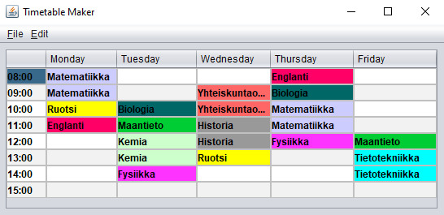

Yleistä
Nimi: Sami Voutilainen
Ikä:
Kotipaikkakunta: Kouvola
Koulutus: FM (TKT) / LuK (TKT)
Ajokortti: B
Hei! Olet saapunut portfolio-verkkosivulleni.
Täältä löydät yksityiskohtaista tietoa koulutuksestani, tekemistäni IT-projekteista sekä kiinnostuksen kohteistani.
Sivun on tarkoitus toimia sekä elektronisena CV:nä että työnäytteenä ohjelmointitaidoistani. Tavoitteena on myös
kertoa tavallista mekaanista CV:tä enemmän minusta sekä harrastuksistani. Työhistoriaani voit tarkastella
linkedin-profiilistani.
Mikäli sinulla herää lisäkysymyksiä tai haluat muuten olla minuun muuten yhteydessä,
löydät yhteystietoni sivun pohjasta.
Koulutus
Tässä osiossa käydään läpi koulutukseni. Kuten huomaat, olen suorittanut tietojenkäsittelytieteen kandidaaatin sekä maisterin tutkinnon Tampereen yliopistossa vuosien 2013 ja 2018 välillä. Alla olevista laatikoista pystyy katsomaan tarkemmin suorittamiani kursseja.
Ennen yliopisto-opintoja kirjoitin ylioppilaaksi vuonna 2012.
Alle on tehty pieni kooste myös muista käymistäni satunnaisista opinnoista. Nautin uuden oppimisesta, minkä vuoksi olen myös opiskellut paljon huvikseni, niin virallisesti kuin epävirallisestikin. Syksyllä 2020 järjestettiin Code Bootcamp -koulutusohjelma, jossa sain mahdollisuuden kehittää omia ohjelmointitaitojani ohjatusti. Koronakeväällä 2020 puolestaan koronakevät mahdollisti maksuttomia opintoja XAMK:n avoimessa ammattikorkeakoulussa, jolloin suoritin muutamia itseäni kiinnostavia kursseja. Ennen tietojenkäsittelyalalle hakeutumista ehdin opiskella vuoden liiketoiminnan logistiikkaa Kymenlaakson ammattikorkeakoulussa Metsolan kampuksella.
Näiden opintojen lisäksi harrastan myös lukemista, joten oppia kertyy epävirallisesti sitäkin kautta. Kielitaitoni on sujuvaa suomeksi sekä englanniksi, ruotsia osaan tyydyttävästi.
Projektit
Tähän osioon olen kerännyt joitain tekemiäni ohjelmistoprojekteja. Esimerkiksi Code Bootcamp -koulutusohjelman aikana, eli syksyllä 2020, rakensin pienen HTML5-matopelin. Lisäksi saatavilla on lähdekoodi yliopistossa kurssitehtävänä javalla tekemääni työpöytäsovellukseen, joka on aikataulutusohjelma. Linkki GitHub-profiiliini.
- HTML5-tekniikoiden opettelua varten tehty matopeli. Käytetty canvas-elementtiä ja tehty osana Code Bootcamp -koulutusohjelmaa. Pelaa tästä!
- Kouluprojekti. Viikkoaikataulujen suunnittelemiseen tehty java-työkalu.
- Ominaisuuksia muun muassa lukujärjestyksen solujen värikoodaaminen, tiedostoon tallentaminen ja lukeminen sekä aikataulun tulostaminen.
- Lähdekoodi GitHubissa. 
Tarkoitukseni on linkittää tänne lisää projekteja aina kun työskentelen sellaisten parissa.
Kiinnostukset
Tässä osiossa esittelen muita kiinnostuksen kohteitani. Kuten mainittua, olen innokas lukemaan kirjoja, minkä lisäksi pidän myös elokuvien katselusta. Tärkein kulttuurimuoto on minulle kuitenkin musiikki, ja senpä vuoksi tästä osiosta löytyy hyvin pieni työnäyte, joka antaa samalla näytteen musiikkimaustani: oikealta löydät pienen laatikon, joka esittelee viimeksi kuuntelemani kappaleet, jotka on noudettu last.fm-palvelusta. Laatikon otsikkoa klikkaamalla pääset myös tarkastelemaan kuunteluhistoriaani tarkemmin last.fm-sivustolla. Mahdollisuuksien mukaan tähän osioon lisätään myöhemmin myös muita upotettuja palveluita, esimerkiksi Goodreads ja Letterboxd.